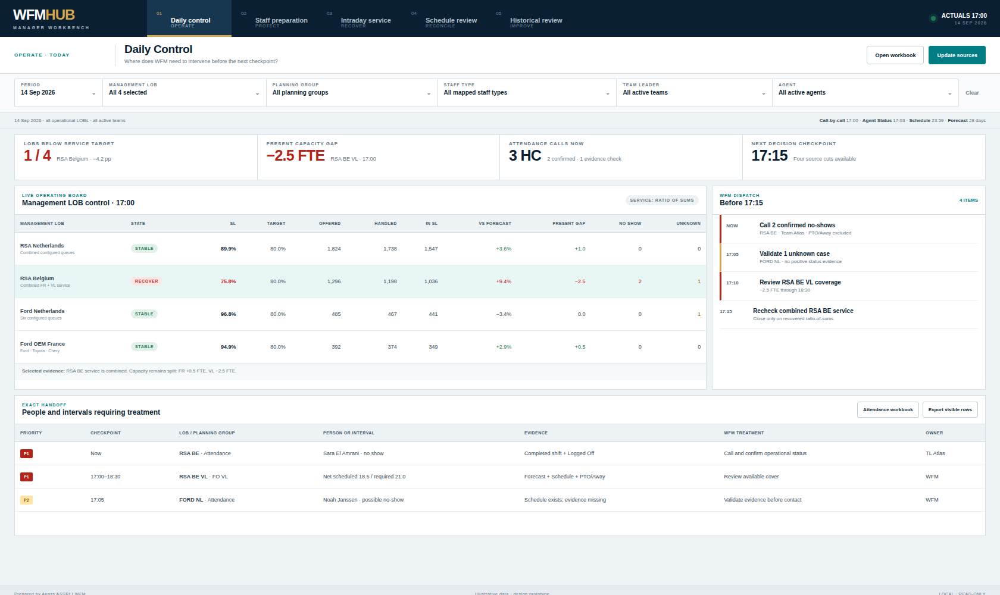
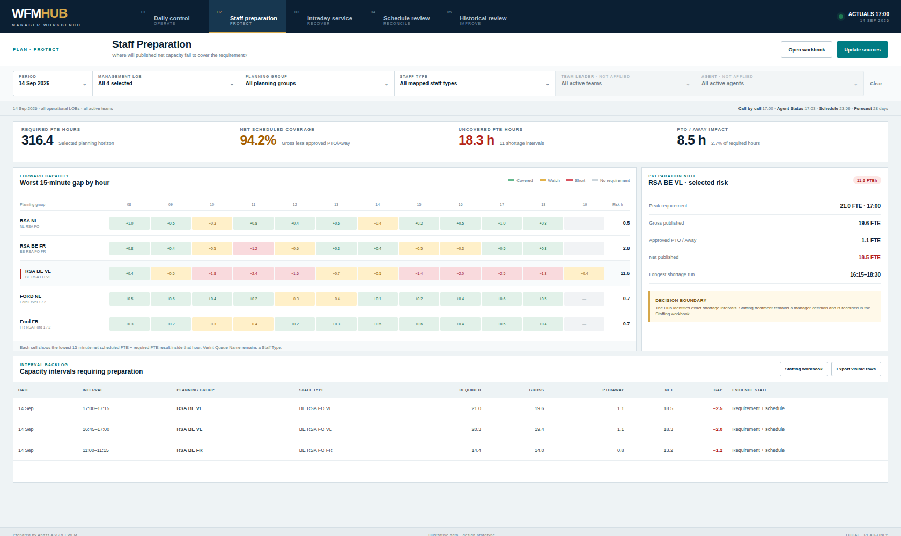
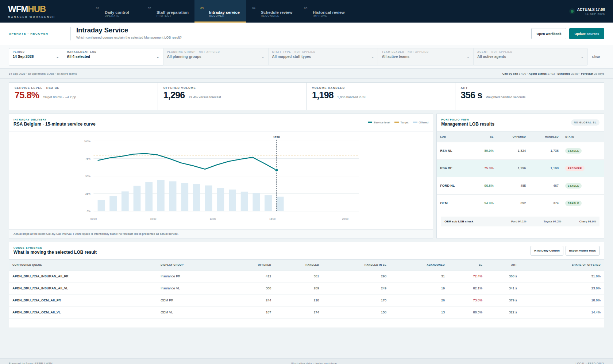
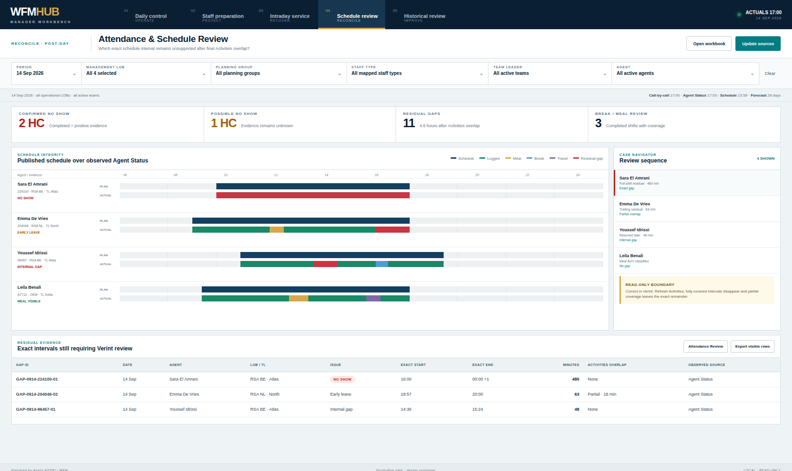
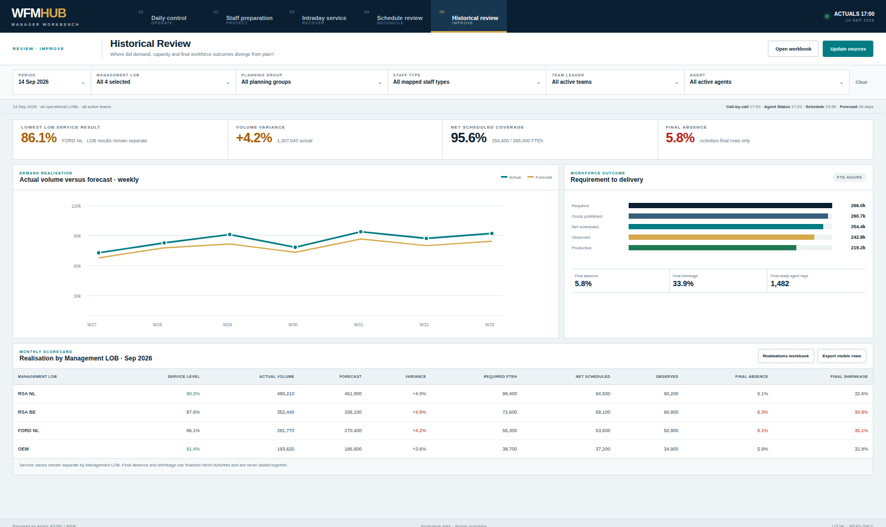

WFMHUB · Manager WorkbenchFIVE GOVERNED WFM VIEWS · ILLUSTRATIVE DATA
01 · Daily Control OPERATE
02 · Staff Preparation PROTECT
03 · Intraday Service RECOVER
04 · Attendance & Schedule Review RECONCILE
05 · Historical Review IMPROVE